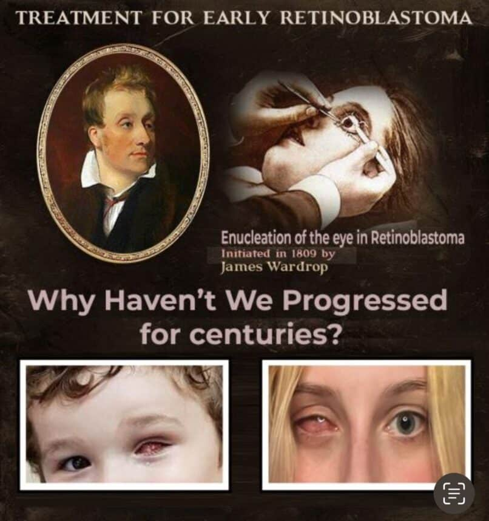
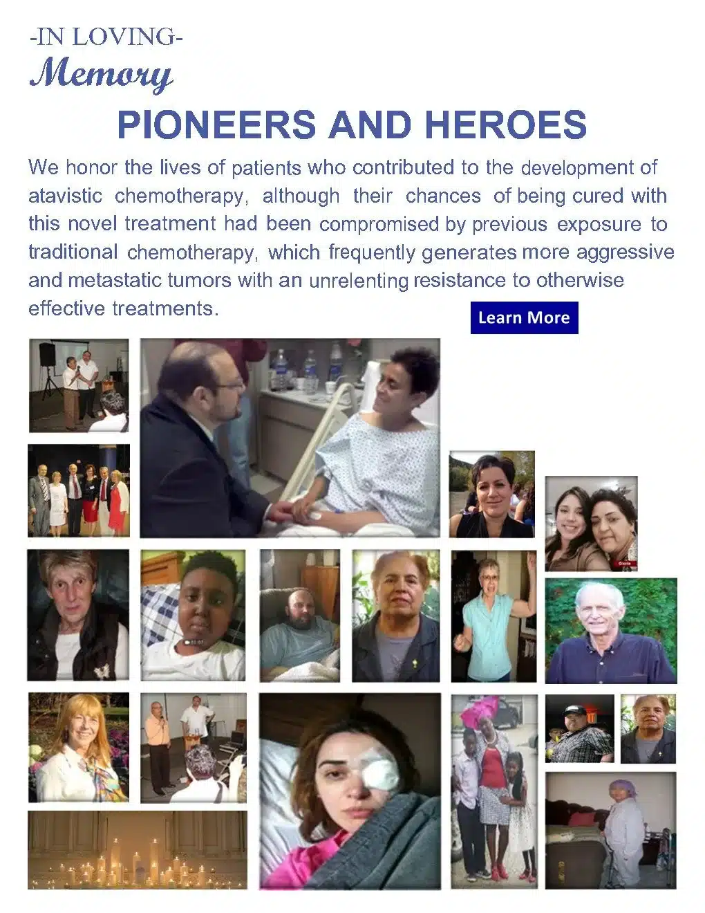
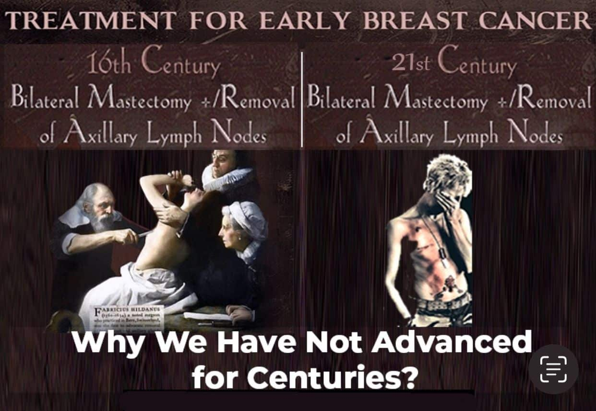
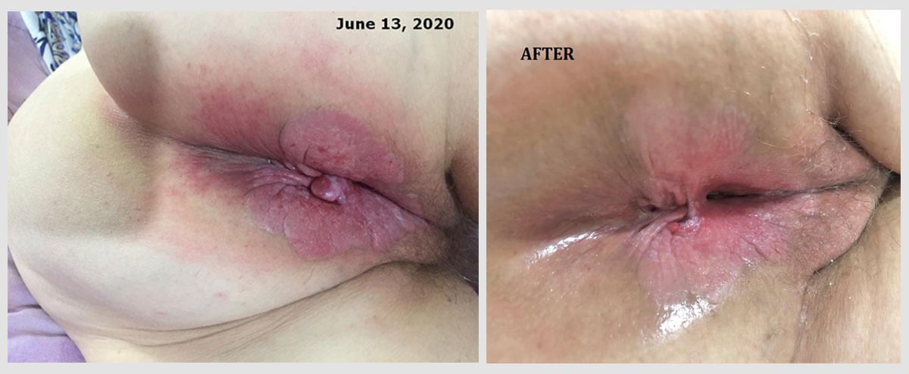
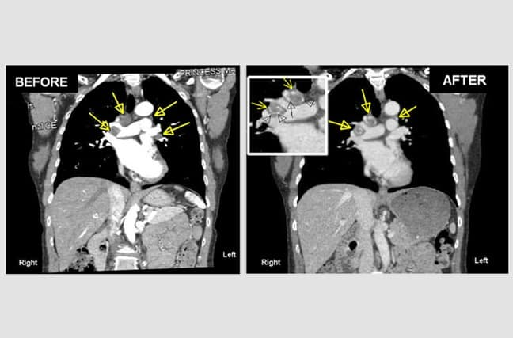
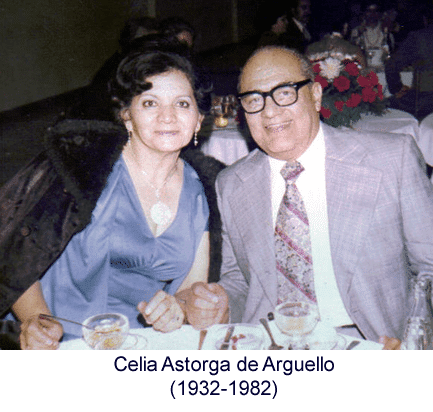
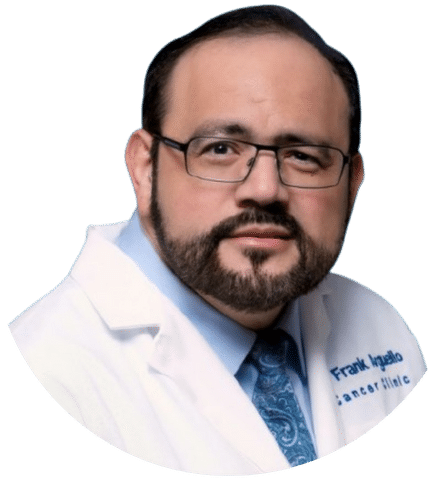

Tal es el caso de niños con cáncer de la retina (retinoblastoma) o de jóvenes y adultos con melanoma ocular (melanoma coroideo), en que los tumores frecuentemente se diagnostican cuando solo miden de 1 a 3 mm.

www.ClinicalTrials.gov (ID: NCT02366884) USA
Cambiando Vidas y la Practica de Oncología Desde el 2011
Si desea sobrevivir a un cáncer que es inoperable, recurrente o con metástasis, evite los programas de quimioterapia, inmunoterapia y radiación actuales. Sus beneficios son mínimos. Los más de 27,000 hombres, mujeres y niños que mueren de cáncer diariamente en el mundo no pueden mentir.
“No aceptes el statu quo. Ningún gran problema ha sido resuelto, ni mejoría alguna ha sido lograda, sin que las personas se atrevan a hacer algo distinto. Atrévete a pensar diferente, no trates de encajar en el molde que otros han estado usando sin éxito.” — Tim Cook (2018)
Con la excepción de una cirugía temprana para remover el órgano afectado por un cáncer, cuando todas las células cancerosas aún se encuentran localizadas en él, las quimioterapias, inmunoterapias y radiaciones que se usan actualmente ofrecen beneficios marginales a pacientes con cáncer. Además de su alto costo y toxicidad a órganos y tejidos normales, estos tratamientos no pueden curar un cáncer, así sea tan diminuto como una semilla de chía o ajonjolí. Tal es el caso de niños con cáncer de la retina (retinoblastoma) o de jóvenes y adultos con melanoma ocular (melanoma coroideo), en que los tumores frecuentemente se diagnostican cuando solo miden de 1 a 3 mm. Sin embargo, a pesar de ello, la única forma de curar a esas personas en la actualidad es removiéndoles quirúrgicamente (enucleando) el ojo, un procedimiento quirúrgico introducido en medicina por James Wardrop (1782-1869) hace más de 200 años, en 1809, para tratar cánceres tempranos del ojo.

Tal es el caso de niños con cáncer de la retina (retinoblastoma) o de jóvenes y adultos con melanoma ocular (melanoma coroideo), en que los tumores frecuentemente se diagnostican cuando solo miden de 1 a 3 mm.

Igualmente, estos tratamientos no pueden curar un cáncer de mama, así sea tan pequeño como una semilla de lenteja o un chícharo (3 a 6 mm).

Realísticamente, si la quimioterapia tradicional o las inmunoterapias actuales no pueden curar un cáncer solitario del tamaño de una semilla de ajonjolí o un chícharo, ¿qué puede esperar una persona con múltiples metástasis en los pulmones, hígado, cerebro o huesos, con tamaños de varios centímetros en diámetro?

La realidad es esta: excluyendo algunas formas de leucemias, linfomas y tumores de células germinales que son curables con una combinación de quimioterapia tradicional y radiaciones, hoy en día, la única manera de curar un cáncer es recurriendo tempranamente a los procedimientos quirúrgicos mutilantes que inventaron nuestros antepasados hace siglos.
Igualmente, estos tratamientos no pueden curar un cáncer de mama, así sea tan pequeño como una semilla de lenteja o un chícharo (3 a 6 mm). Para curar a esa mujer u hombre con cáncer de la mama, el seno y los ganglios linfáticos axilares tienen que ser removidos quirúrgicamente. Este es un procedimiento quirúrgico que fue introducido en medicina hace más de 500 años para tratar el cáncer temprano de la mama por el cirujano Fabricius Hildanus (1560-1634).
La realidad es esta: excluyendo algunas formas de leucemias, linfomas y tumores de células germinales que son curables con una combinación de quimioterapia tradicional y radiaciones, hoy en día, la única manera de curar un cáncer es recurriendo tempranamente a los procedimientos quirúrgicos mutilantes que inventaron nuestros antepasados hace siglos. Tal como el de remover ojos, senos, piernas, brazos, la lengua, faringe, etc. Realísticamente, si la quimioterapia tradicional o las inmunoterapias actuales no pueden curar un cáncer solitario del tamaño de una semilla de ajonjolí o un chícharo, ¿qué puede esperar una persona con múltiples metástasis en los pulmones, hígado, cerebro o huesos, con tamaños de varios centímetros en diámetro?
“El cuchillo y el cauterio son, incluso hoy, nuestros únicos remedios contra el cáncer temprano. Pero, en la infancia de nuestro arte, ¿qué no eran los mismos?” — Bernard Peyrilhe 1774 (poco ha cambiado desde entonces)

La quimioterapia atávica es un método moderno y científico de tratar y potencialmente curar a una persona con un cáncer que es inoperable, o que no pudo ser completamente removido con una cirugía, o bien cuando células cancerosas del tumor original se han desplazado a través de la sangre a otros órganos formando tumores en ellos, conocidos como metástasis (etapa 4 o terminal).
El cáncer, o la transformación maligna, ocurre cuando hay una regresión evolutiva de una célula normal hacia su estado celular primitivo o ancestral como un organismo unicelular e independiente, y de donde se originaron nuestras células (Referencias 1, 2).
La quimioterapia atávica consiste en el uso de cinco medicamentos aprobados hace décadas por la FDA y por todas las agencias de salud del mundo, para tratar hombres, mujeres y niños con enfermedades causadas por células primitivas, como es el caso de las células bacterianas, fúngicas y protozoarias.
El Dr. Arguello descubrió que el uso selectivo, secuencial y combinado de estos medicamentos por vía oral crea un potente efecto anticanceroso, que ha sido demostrado clínicamente en muchos pacientes con varios tipos de cáncer avanzado. Los efectos colaterales son mínimos y bien tolerados.
En este libro, el Dr. Arguello sostiene y documenta científicamente que el cáncer, o la transformación maligna, ocurre cuando hay una regresión evolutiva de una célula normal hacia su estado celular primitivo o ancestral como un organismo unicelular e independiente, y de donde se originaron nuestras células. Todos los organismos vivos que habitan este planeta están formados por células, y se ha demostrado con estudios genéticos que las células de todos los organismos, incluyendo los seres humanos, tienen un mismo origen. Todos descendemos de una colonia de células primitivas u organismos unicelulares, similares a las células bacterianas actuales, que existieron en este planeta hace billones de años. Es decir, de estas células primitivas descienden todas las formas de vida actual (Referencias 1, 2). Esa conducta celular primitiva e independiente de nuestros antepasados celulares quedó codificada en la memoria genética de todas las células que existen en la actualidad.
“Cualquier célula viva en este planeta lleva consigo la experiencia de miles de millones de años de la vida de sus antepasados celulares.” — Max Delbrück (1906-1981), Premio Nobel de Medicina (1969)
Lo anterior explica por qué el cáncer no solo afecta a los seres humanos, sino también a todas las especies de animales, incluyendo aves, mamíferos, reptiles, insectos, peces y anfibios, así como a las plantas y los árboles. Esta interpretación está obviamente en conflicto con la hipótesis tradicional de que las mutaciones genéticas son la causa del cáncer, postulada hace más de 100 años por Theodor Boveri (1862-1915) en 1912. Sin embargo, la mayoría de las mutaciones genéticas que se han encontrado en las células cancerosas también se han hallado en las células de enfermedades no relacionadas con el cáncer (3, 4). Por lo que el Dr. Arguello explica que las mutaciones genéticas y otras anormalidades que se encuentran en células cancerosas no son la causa del cáncer, sino cambios que resultan a consecuencia de la transformación maligna.
Si usted desea ver ejemplos de la respuesta antitumoral a la quimioterapia atávica en pacientes a quienes hospitales en Canadá, Estados Unidos o México los habían considerado terminales o desahuciados, le invitamos a visitar nuestra página web: AtavisticChemotherapy.com (puede seleccionar su idioma en la barra de menú). También, abajo, están los nombres y correo electrónico de cinco pacientes tratados por el Dr. Arguello en México. Conviene señalar que uno de esos pacientes es la hermana del Dr. Arguello, y otro una sobrina. Ellos han aceptado responder preguntas si usted está interesado(a) en esta nueva forma de quimioterapia atávica. Todos ellos tenían enfermedad metastásica (estadio IV), y desde el punto de vista oncológico actual, habrían muerto a causa de su enfermedad. Sin embargo, siguen con nosotros libres de cáncer después de 1 a 9 años de haber sido tratados. Cabe destacar que el récord de sobrevivencia libre de cáncer después del tratamiento con quimioterapia atávica lo lleva la Sra. Brealey, 13 años luego de haber sido tratada. Ella radica en Toronto, Canadá.
Si su caso es aceptado por el Dr. Arguello y, después de firmar sus documentos de registro y consentimiento informado, su tratamiento iniciará mediante la toma de los medicamentos por vía oral en forma de pastillas o cápsulas. Esto se realiza en la comodidad del hogar del paciente, durante un periodo de tres meses. Se solicitan estudios rutinarios de laboratorio cada 15 días durante el tratamiento y se monitorea la respuesta del cáncer a través de PET, TAC, MRI, ultrasonido o marcadores tumorales, según sea el caso. El tratamiento tiene un costo mensual de XXXX, pero el primer mes no se paga si usted o sus médicos no ven una respuesta objetiva al tratamiento. Si usted no ve beneficios claros durante las primeras tres semanas, tal como disminución en el tamaño de su(s) tumor(es), disminución de dolor, o de cualquier otro síntoma causado por su enfermedad, el tratamiento se suspende y usted no debe pagar nada. En cambio, si los beneficios del tratamiento son evidentes, como en muchos otros casos ha ocurrido, usted tendría que pagar por el primer mes ya completado y el segundo mes para continuar. Si la mejoría continúa, un tercer mes de tratamiento será necesario. El objetivo del Dr. Arguello es eliminar el cáncer de su cuerpo. Si el Dr. Arguello cree que un cuarto mes de tratamiento se requiere para asegurarse de que el cáncer no regrese; ese cuarto mes se le dará sin costo alguno.

El Dr. Frank Arguello, inventor de esta innovadora modalidad de quimioterapia, ha dedicado su vida al estudio y tratamiento del cáncer después de ver morir a su madre en 1982 de cáncer cuando el iniciaba la carrera de medicina. El obtuvo el título de Médico Cirujano y Partero de la Facultad de Medicina de la Universidad Autónoma de Nuevo León, ubicada en Monterrey, Nuevo León.
Posteriormente, completó su formación en oncología en la Escuela de Medicina y Odontología de la Universidad de Rochester, en Rochester, Nueva York. En esta institución, ocupó el cargo de Profesor de Oncología y Pediatría Hematología/Oncología, y más adelante se desempeñó como Investigador Principal en el Instituto Nacional del Cáncer dentro de la División de Tratamiento y Diagnóstico del Cáncer de los Institutos Nacionales de Salud, en Frederick, Maryland.
En el año 2011, el Dr. Arguello publicó un libro que se considera pionero y precursor de una manera más comprensiva sobre el origen y la biología de las células cancerosas. El título del libro en inglés es “Atavistic Metamorphosis: A New and Logical Explanation on the Origin and Nature of Cancer.” (Metamorfosis Atávica: Una Nueva y Lógica Explicación Sobre el Origen y la Biología del Cáncer).
Ambas son quimioterapias en que ambas se basan en el uso de químicos o fármacos como tratamiento fundamental. Sin embargo, en la quimioterapia tradicional, los químicos utilizados están predominantemente dirigidos a interferir con la multiplicación de las células, lo que afecta tanto a células cancerosas como a las normales, y de ahí su toxicidad. En cambio, en la quimioterapia atávica, los cinco medicamentos utilizados están estratégicamente orientados a interferir con las funciones vitales y de defensa de organismos unicelulares, similar a los que se emplean para tratar a niños y adultos con infecciones graves por organismos unicelulares, como es el caso de células bacterianas, fúngicas y protozoarias.
1) A pesar del aparente progreso en la investigación y el tratamiento del cáncer durante los últimos 60 años, el cáncer representa hoy en día una amenaza mucho mayor para el mundo que en cualquier otro momento de la historia de la medicina.
2) Diariamente, más de 27,000 hombres, mujeres y niños mueren de cáncer, o por la quimioterapia y procedimientos empleados para tratarlos (9).
3) En los Estados Unidos, más de 1,670 hombres, mujeres y niños mueren de cáncer diariamente en los mejores hospitales del mundo (10). El cáncer en ese país es la causa principal de muerte en todas las personas adultas antes de los 85 años (11, 12), y también representa la causa principal de muerte por enfermedad en niños de 1 a 19 años. De hecho, el cáncer es responsable de más muertes en niños en ese país que todas las demás enfermedades infantiles combinadas (13).
4) La mayoría de la gente desconoce que hoy en día un cáncer es incurable y casi siempre mortal, aun recibiendo los tratamientos actuales de quimioterapia tradicional, inmunoterapia y radiación, cuando el tumor es técnicamente inoperable, si no pudo ser removido quirúrgicamente en su totalidad, o si células cancerosas han migrado de su sitio de origen a otros órganos (metastatizado). En un estudio del Danna-Farber Cancer Institute en los Estados Unidos, se encontró que hasta el 80% de 1,193 pacientes entrevistados, quienes estaban recibiendo quimioterapia tradicional por cánceres del colon o pulmón con metástasis a otros órganos, contestaron que creían que el tratamiento que estaban recibiendo de quimioterapia los podría curar. Cuando desde el punto de vista oncológico todos morirían de su enfermedad, y así fue (14).
5) Se estima que 75,000 a 100,000 niños mueren de cáncer cada año en el mundo (15)
6) A pesar de una respuesta inicial aparente a la quimioterapia, inmunoterapias y radiación convencionales, las células cancerosas sobrevivientes se vuelven más agresivas y metastatizan con mayor facilidad. Solo en los últimos años este problema de exacerbación iatrogénica del cáncer inducida por fármacos, inmunoterapia y radiación ha sido reconocido más abiertamente por la comunidad médica (5, 6, 7, 8).
La efectividad de esta nueva forma de quimioterapia disminuye significativamente si el cáncer en el paciente ha sido expuesto previamente por más de tres meses a los esquemas de quimioterapia o radiación usados tradicionalmente en oncología. Ya que la radiación y los fármacos usados actualmente, aunque sí tienen efecto en muchas de las células cancerosas, no son capaces de eliminarlas o erradicarlas completamente. Por lo tanto, causan que las células cancerosas sobrevivientes se vuelvan más agresivas con el tiempo, se diseminen más rápidamente en el cuerpo y se hagan resistentes a todo tipo de tratamientos en su lucha por sobrevivir (5, 6, 7, 8). En estos casos, no podemos ofrecer el primer mes de prueba, por lo que su pago es necesario si el Dr. Arguello cree que vale la pena tratar y ver si el cáncer es aún sensible al tratamiento. Si más tratamiento es necesario más allá del tercer mes, en personas previamente tratadas convencionalmente, los meses adicionales tendrán que pagarse también (esto costos puede eliminarse según el caso).
Si desea tener una segunda opinión o discutir su caso o el de un familiar, sin costo alguno y sin compromiso, con el Dr. Arguello o la Dra. Lourdes Cortez (sobrina y ex-paciente del Dr. Arguello), para determinar si es candidato(a) a esta nueva forma de quimioterapia, por favor, complete el formulario abajo. Nos pondremos en contacto con usted por correo electrónico, WhatsApp o teléfono, según su preferencia. Si usted tiene limitaciones económicas, que eso no le impida contactarnos para evaluar su caso. Podríamos ayudarle a crear campañas para recabar los fondos vía GoFundMe u otras plataformas.
1. Theobald DL. A formal test of the theory of universal common ancestry. Nature. 2010 May 13;465(7295):219-22. doi: 10.1038/nature09014. PMID: 20463738.
2. Gómez-Márquez J. What are the principles that govern life? Commun Integr Biol. 2020 Aug 10;13(1):97-107. doi: 10.1080/19420889.2020.1803591. PMID: 33014262; PMCID: PMC7518457.
3. Adashek, J.J., Kato, S., Lippman, S.M. et al. The paradox of cancer genes in non-malignant conditions: implications for precision medicine. Genome Med 12, 16 (2020). https://doi.org/10.1186/s13073-020-0714-y
4. Kennedy SR, Zhang Y, Risques RA. Cancer-Associated Mutations but No Cancer: Insights into the Early Steps of Carcinogenesis and Implications for Early Cancer Detection. Trends Cancer. 2019 Sep;5(9):531-540. doi: 10.1016/j.trecan.2019.07.007. Epub 2019 Aug 22. PMID: 31474358; PMCID: PMC8765002.
5. Middleton JD, Stover DG, Hai T. Chemotherapy-exacerbated breast cancer metastasis: a paradox explainable by dysregulated adaptive-response. Int J Mol Sci. 2018 Oct 26;19(11):3333. doi: 10.3390/ijms19113333. PMID: 30373101; PMCID: PMC6274941.
6. D’Alterio C, Scala S, Sozzi G, Roz L, Bertolini G. Paradoxical effects of chemotherapy on tumor relapse and metastasis promotion. Semin Cancer Biol. 2020 Feb;60:351-361. doi: 10.1016/j.semcancer.2019.08.019. Epub 2019 Aug 24. PMID: 31454672.
7. Wang ZF, Ma CH, Maswikiti EP, Han QY, He LJ, Liu B, Han ZJ, Chen H. The Black Hole of Immune Checkpoint Blocking Therapy for Gastric Cancer: Hyperprogressive Disease. Cancer Sci. 2025 Oct;116(10):2630-2639. doi: 10.1111/cas.70143. Epub 2025 Jul 23. PMID: 40702846; PMCID: PMC12485826.
8. Saâda-Bouzid E, Defaucheux C, Karabajakian A, Coloma VP, Servois V, Paoletti X, Even C, Fayette J, Guigay J, Loirat D, Peyrade F, Alt M, Gal J, Le Tourneau C. Hyperprogression during anti-PD-1/PD-L1 therapy in patients with recurrent and/or metastatic head and neck squamous cell carcinoma. Ann Oncol. 2017 Jul 1;28(7):1605-1611. doi: 10.1093/annonc/mdx178. PMID: 28419181.
9. Global Burden of Disease 2019 Cancer Collaboration, Kocarnik JM, Compton K, et al. Cancer Incidence, Mortality, Years of Life Lost, Years Lived With Disability, and Disability-Adjusted Life Years for 29 Cancer Groups From 2010 to 2019: A Systematic Analysis for the Global Burden of Disease Study 2019. JAMA Oncol. 2022;8(3):420-444. doi:10.1001/jamaoncol.2021.6987
10. Siegel RL, Giaquinto AN, Jemal A. Cancer statistics, 2024. CA Cancer J Clin. 2024 Jan-Feb;74(1):12-49. doi: 10.3322/caac.21820. Epub 2024 Jan 17. Erratum in: CA Cancer J Clin. 2024 Mar-Apr;74(2):203. PMID: 38230766
11. Twombly R. Cancer surpasses heart disease as leading cause of death for all but the very elderly. J Natl Cancer Inst. 2005;97(5):330-331. doi:10.1093/jnci/97.5.330
12. Harding MC, Sloan CD, Merrill RM, Harding TM, Thacker BJ, Thacker EL. Transitions From Heart Disease to Cancer as the Leading Cause of Death in US States, 1999-2016. Prev Chronic Dis. 2018;15:E158. Published 2018 Dec 13. doi:10.5888/pcd15.180151
13. Ward E, DeSantis C, Robbins A, Kohler B, Jemal A. Childhood and adolescent cancer statistics, 2014. CA Cancer J Clin. 2014 Mar-Apr;64(2):83-103. doi: 10.3322/caac.21219. Epub 2014 Jan 31. PMID: 24488779.
14. Weeks JC, Catalano PJ, Cronin A, Finkelman MD, Mack JW, Keating NL, Schrag D. Patients’ expectations about effects of chemotherapy for advanced cancer. N Engl J Med. 2012 Oct 25;367(17):1616-25. doi: 10.1056/NEJMoa1204410. PMID: 23094723; PMCID: PMC3613151.
15. Lupo PJ, Spector LG. Cancer Progress and Priorities: Childhood Cancer. Cancer Epidemiol Biomarkers Prev. 2020 Jun;29(6):1081-1094. doi: 10.1158/1055-9965.EPI-19-0941. PMID: 32482635; PMCID: PMC9400945.